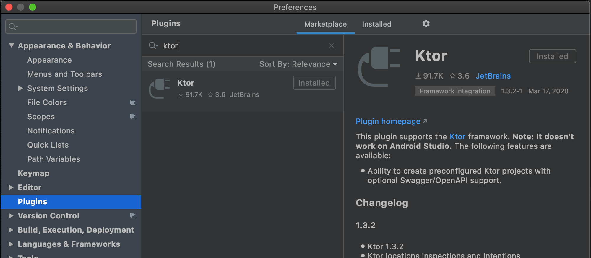
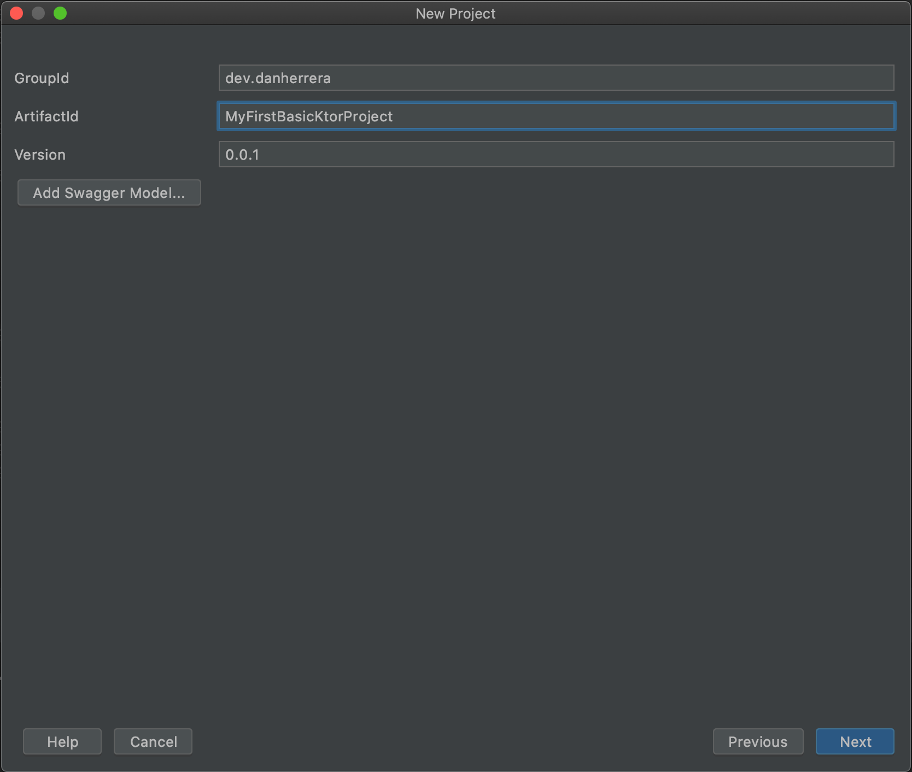

In this post, we’ll be going over how to create a basic Ktor project and configuring it with autoreload, a feature that automatically rebuilds the code on file changes. Furthermore, we’ll explore two ways of building and running the application: via the command line and via the IDE.
Creating a Ktor project
Using the latest version of IntelliJ IDEA, ensure the latest Ktor plugin is installed.

This plugin provides us with a convenient user interface to generate new Ktor projects.
Summon the New Project window by selecting the File > New > New Project… menu.
To get quickly started, click Next to start from a minimal Ktor project. Fill out the project’s Maven GroupId and ArtifactId:

Continue to the next step to name the Gradle project:
In this example, the name is “MyFirstBasicKtorProject”. Remember this name to set up Ktor’s autoreload feature as this directory will be part of the Java classpath. After selecting Finish, open the Application.kt file:
As seen in this file, the main function is starting the Netty server engine. This engine references the application.conf HOCON configuration file under the resources directory:
This file defines the port that Ktor will use. This port can also be supplied via the PORT environment variable (in which case it will override the 8080 port defined above). Additionally, a module is predefined within the Application.kt file. Separate modules can be used to separate the definition of features.
Defining a GET HTTP controller
For starters, let’s define a basic GET controller that responds with plain text:
The Application class provides a routing block to define HTTP controllers. In this example, we are defining a root path GET controller. The get block provides a reference to the PipelineContext, which helps provide call, an object used to read the request and send a response. This instance utilizes the respondText function to respond with plain text. Although now we’re ready to run the application with the run gradle task, let’s first configure autoreload.
Configuring Autoreload
Autoreload is a Ktor configuration feature that enables automatically rebuilding the project on file saves so that we don’t have to manually rebuild after changes. To enable this, we first must add the current classpath (correlates to the project’s directory name, e.g. MyFirstBasicKtorProject) to the ktor.deployment.watch HOCON configuration:
Building and running via the command line
If you prefer running the project via the command line, you can first run ./gradlew build -t in a terminal window. The -t flag defines a continuous build: as file changes happen, the build is re-triggered. Because the command is continuous, we will need a separate terminal window to run the next command: ./gradlew run. This will run the application.
Building and running via IntelliJ IDEA
From the top-right of the IDE, select Add Configuration…
From the Run/Debug Configurations window, click the + button and select the Gradle option. Name the configuration (in this example, it is “Continuous Build”). Next, select the project from the folder icon drop down. For the Tasks option, type build. Additionally, supply the -t argument in order to configure this Gradle task as continuous. Click Apply to save the configuration.
Next, we’ll create a run configuration by repeating the same steps to create a new configuration (via clicking the + button). Additionally, we will define the Continuous Build configuration as a dependency for the run configuration. To do so, click the + button under the Before launch section and select Run Another Configuration. Select Continuous Build from the drop down menu and select OK to complete setting up the configurations.
Play the Run configuration:
Because the Continuous Build is never-ending, the actual Run configuration does not run initially. To mitigate this, click on the Rerun icon.

We should now have both configurations running:
Viewing the running app in the browser
In a browser, load http://localhost:8080/ to view the plain text we defined:
If we go back to the Application.kt file, make a change, and save the file…
…then we will be able to refresh the browser and view the change without needing to manually rebuild the application!
Summary
To conclude, in this post we learned how to create a new Ktor project in IntelliJ IDEA. We learned how to:
- Define a basic HTTP GET controller
- Configure the Ktor project for autoreload
- Continuously build and run a Ktor project from the command line
- Continuously build and run a Ktor project using the IDE
Thank you for your time! To learn more about Ktor, please refer to the Ktor documentation.
Cheers!